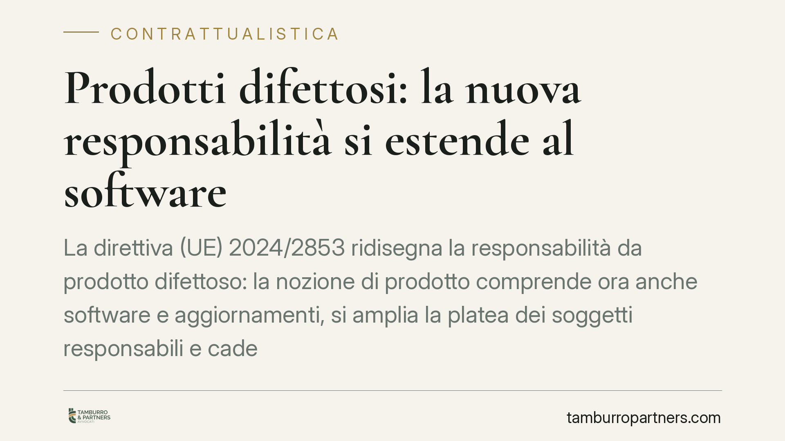

Prodotti difettosi: la nuova responsabilità si estende al software
La direttiva (UE) 2024/2853 ridisegna la responsabilità da prodotto difettoso: la nozione di prodotto comprende ora anche software e aggiornamenti, si amplia la platea dei soggetti responsabili e cade la soglia minima per i danni materiali. L'applicazione interna è attesa entro il 9 dicembre 2026. Per imprese e piattaforme digitali cambia il perimetro del rischio.

Il quadro: cosa introduce la riforma
La direttiva (UE) 2024/2853 sostituisce la storica direttiva 85/374/CEE, che in Italia è recepita agli articoli 114 e seguenti del Codice del consumo. Il recepimento interno è atteso entro il 9 dicembre 2026, termine fissato per l'applicazione negli Stati membri. Il decreto nazionale di attuazione andrà verificato nel numero e nella data esatti al momento della sua pubblicazione: fino ad allora conviene lavorare sul testo della direttiva.
La logica di fondo resta la responsabilità oggettiva del produttore: il danneggiato non deve dimostrare una condotta colposa, ma provare il difetto del prodotto, il danno e il nesso causale tra i due. È un regime diverso dalla responsabilità contrattuale e da quella per fatto illecito, e questa riforma ne aggiorna profondamente i presupposti.
Le novità sostanziali
Il software diventa prodotto. La direttiva include espressamente nella nozione di prodotto il software e gli aggiornamenti, compresi quelli necessari a mantenere la sicurezza. Un aggiornamento mancato o difettoso può quindi generare responsabilità, anche a distanza di tempo dalla prima immissione sul mercato.
Più soggetti coinvolti. Accanto a fabbricanti e importatori, la responsabilità può estendersi ai fornitori di servizi di logistica e alle piattaforme online, quando operano in modo tale da apparire essi stessi fornitori del prodotto. La filiera distributiva digitale entra a pieno titolo nel perimetro del rischio.
Soglia minima per i danni materiali. La previgente disciplina (art. 123 Cod. consumo, in attuazione della dir. 85/374/CEE) prevedeva una franchigia per i danni alle cose. La nuova direttiva supera questo meccanismo, ampliando la risarcibilità. Il valore e le modalità esatte andranno letti nel testo di recepimento una volta pubblicato.
Danno da perdita di dati. Tra i pregiudizi risarcibili la direttiva include anche la distruzione o il danneggiamento di dati non utilizzati a fini professionali. È una voce nuova, coerente con l'estensione al software.
Alleggerimento dell'onere della prova. La direttiva introduce presunzioni a favore del danneggiato in situazioni di particolare complessità tecnica, quando la prova del difetto o del nesso causale risulti eccessivamente difficile. Il principio è chiaro; l'ampiezza concreta delle presunzioni dipenderà dal testo attuativo e dall'articolo che le recepirà.
Che cosa cambia per le imprese
Per chi produce, importa o distribuisce beni con componente digitale, il rischio si sposta sul ciclo di vita del prodotto, non solo sul momento della vendita. Gli aggiornamenti di sicurezza diventano un obbligo sostanziale la cui omissione può costare in termini risarcitori.
Le piattaforme online devono valutare quando la propria operatività le espone a una responsabilità diretta. I fornitori di logistica entrano in un'area prima marginale.
Va ricordato il profilo temporale: salvo diversa indicazione del decreto, la nuova disciplina si applicherà ai prodotti immessi sul mercato dopo l'entrata in vigore, senza effetto retroattivo. Il regime previgente continuerà a governare i prodotti già in circolazione.
Cosa fare in concreto
- Mappare la filiera digitale. Individuare ruoli e responsabilità lungo la catena, incluse piattaforme e fornitori logistici, per capire dove può radicarsi la responsabilità.
- Strutturare la gestione degli aggiornamenti. Definire policy documentate di manutenzione e sicurezza del software, con tracciabilità delle versioni rilasciate.
- Rivedere i contratti di fornitura e distribuzione. Aggiornare clausole di manleva, obblighi informativi e ripartizione delle responsabilità alla luce del nuovo perimetro.
- Verificare le coperture assicurative. Accertare che le polizze product liability includano il software, gli aggiornamenti e il danno da perdita di dati.
- Predisporre la documentazione tecnica. Conservare evidenze su progettazione, test e correzioni: utili per contrastare le presunzioni di difetto introdotte dalla riforma.
È opportuno avviare queste verifiche con anticipo rispetto al 9 dicembre 2026, monitorando la pubblicazione del decreto di recepimento per allineare procedure e contratti al testo definitivo.
---
Contributo informativo a cura di Tamburro & Partners - Avv. Giuseppe Tamburro. Non costituisce parere legale.
Ogni contratto ha il suo equilibrio.
Se vuoi una revisione delle clausole o una redazione su misura, scrivi allo studio. Ti rispondiamo entro un giorno lavorativo.